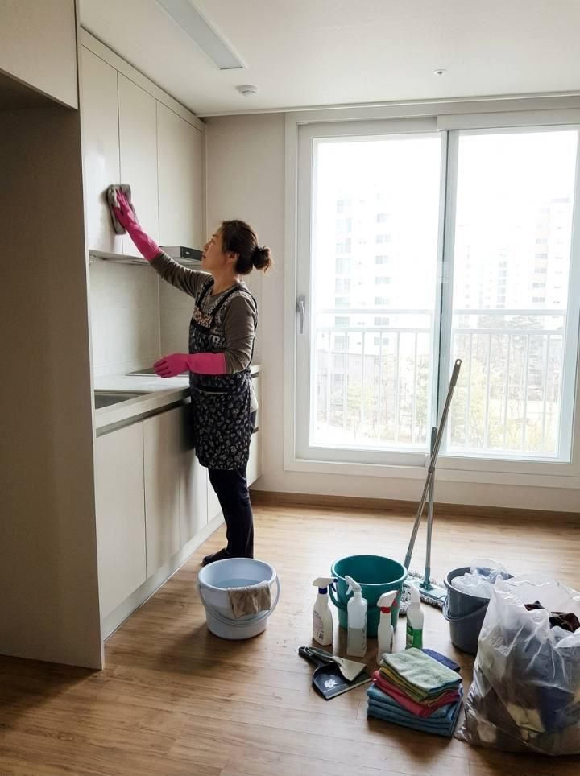

예시 사진- 3곳가까운 동네 업체
- 0원연결 수수료
- 먼저출발 전 금액 안내
수도권·광역시 연결 업체
어떤 상황인가요?
해당하는 걸 모두 고르면, 내용이 적힌 문자로 바로 연결돼요.
어느 동네세요?
새 집에 들어가기 전이나 이사 나간 뒤 집 전체를 청소해 줄 업체를 연결합니다.
서울특별시
- 종로구광화문·혜화·평창
- 서울 중구명동·을지로·신당
- 용산구이태원·한남·용산역
- 성동구성수·왕십리·옥수
- 광진구건대입구·구의·자양
- 동대문구청량리·회기·장안
- 중랑구면목·상봉·망우
- 성북구성신여대·길음·정릉
- 강북구수유·미아·번동
- 도봉구창동·쌍문·방학
- 노원구상계·중계·공릉
- 은평구연신내·불광·은평뉴타운
- 서대문구신촌·연희·홍제
- 마포구홍대·합정·공덕·상암
- 양천구목동·신월·신정
- 강서구마곡·화곡·발산
- 구로구구로디지털·신도림·개봉
- 금천구가산·독산·시흥동
- 영등포구여의도·영등포·당산
- 동작구노량진·사당·흑석
- 관악구신림·봉천·서울대입구
- 서초구강남역·반포·방배·양재
- 강남구역삼·삼성·압구정·대치
- 송파구잠실·문정·가락
- 강동구천호·고덕·둔촌
경기도
- 수원시영통·광교·인계동
- 성남시분당·판교·수정
- 고양시일산·화정·삼송
- 용인시수지·기흥·처인
- 부천시중동·상동·원미
- 안산시고잔·중앙동·반월
- 안양시평촌·범계·안양1번가
- 남양주시다산·별내·호평
- 화성시동탄·봉담·향남
- 평택시고덕·평택역·송탄
- 의정부시민락·신곡·의정부역
- 시흥시배곧·은계·정왕
- 파주시운정·금촌·문산
- 광명시철산·하안·광명역
- 김포시한강신도시·풍무·사우
- 군포시산본·금정·대야미
- 경기 광주시오포·태전·경안
- 이천시증포·중리·부발
- 양주시옥정·회천·덕정
- 오산시세교·원동·오산역
- 구리시인창·교문·갈매
- 안성시공도·아양·안성시내
- 포천시소흘·송우·포천동
- 의왕시내손·포일·오전
- 하남시미사·위례·감일
- 여주시여주시내·가남·세종대왕릉
- 동두천시지행·생연·보산
- 과천시중앙동·별양·지식정보타운
- 가평군가평읍·청평·설악
- 양평군양평읍·양서·용문
- 연천군전곡·연천읍·청산
인천광역시
- 제물포구옛 중구 내륙·동구
- 영종구영종도·용유·무의
- 미추홀구주안·숭의·용현·학익
- 연수구송도·연수·동춘·옥련
- 남동구구월·간석·만수·논현
- 부평구부평·산곡·삼산·갈산
- 계양구계산·작전·효성·귤현
- 서구청라·가정·석남·가좌
- 검단구검단신도시·당하·원당·마전
- 강화군강화읍·길상·화도·선원
- 옹진군영흥·북도·덕적·백령
부산광역시
- 부산 중구남포동·광복동·중앙동
- 부산 서구송도·동대신·남부민
- 부산 동구부산역·초량·수정동
- 영도구동삼·남항·청학
- 부산진구서면·전포·양정
- 동래구온천장·명륜·사직
- 부산 남구대연·용호·문현
- 부산 북구화명·덕천·구포
- 해운대구해운대·센텀·좌동
- 사하구하단·다대포·신평
- 금정구부산대·구서·장전
- 부산 강서구명지·대저·녹산
- 연제구연산동·거제동·시청
- 수영구광안리·남천·민락
- 사상구사상역·괘법·학장
- 기장군정관·일광·기장읍
대구광역시
- 대구 중구동성로·서문시장·대봉
- 대구 동구신암·동촌·혁신도시
- 대구 서구비산·평리·내당
- 대구 남구대명동·봉덕·앞산
- 대구 북구칠곡·침산·경북대
- 수성구범어·만촌·시지
- 달서구상인·월성·성서
- 달성군다사·화원·테크노폴리스
- 군위군군위읍·효령·삼국유사
광주광역시
대전광역시
울산광역시
세종특별자치시
이런 일이면 부르세요
- 입주 청소
- 이사 청소
- 신축 분진
- 곰팡이
- 주방 기름때
- 베란다·창틀
입주·이사청소 비용
참고 범위예요. 업체가 출발하기 전에 전화로 예상 금액을 먼저 알려드립니다.
업체가 오기 전에
- 짐 빼기 일정 맞추기
짐이 다 빠진 빈 집에서 해야 구석까지 청소할 수 있습니다.
- 전기·수도 확인
청소 날 전기와 물이 나와야 합니다.
- 특별히 볼 곳 알리기
곰팡이, 스티커 자국처럼 신경 쓰이는 곳을 미리 말씀해 주세요.
청소 범위와 추가 요금 기준을 예약 전에 확인해야 당일 분쟁이 없습니다.
자주 묻는 질문
입주 청소 비용은요?
30평대 기준 보통 35만~55만 원 선이고, 상태에 따라 달라집니다.
몇 시간 걸리나요?
30평대는 보통 인원 3~4명이 하루 안에 끝냅니다.
마음에 안 들면요?
작업 끝나고 함께 확인하고, 부족한 곳은 그 자리에서 다시 해 달라고 요청하세요.